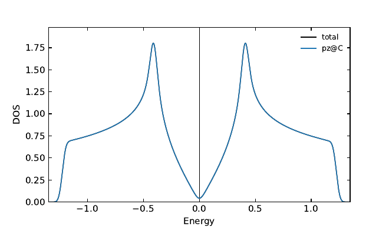
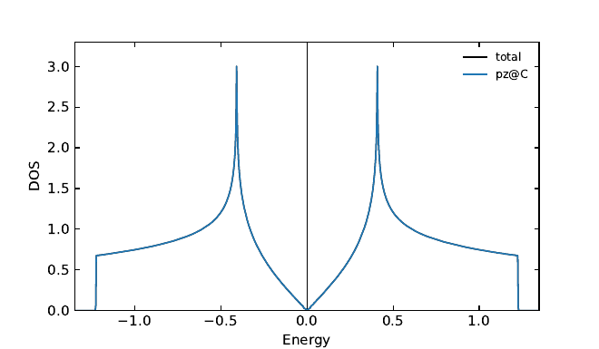
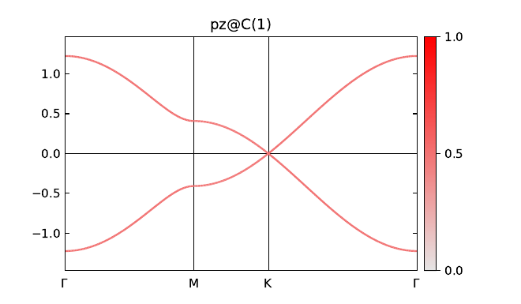
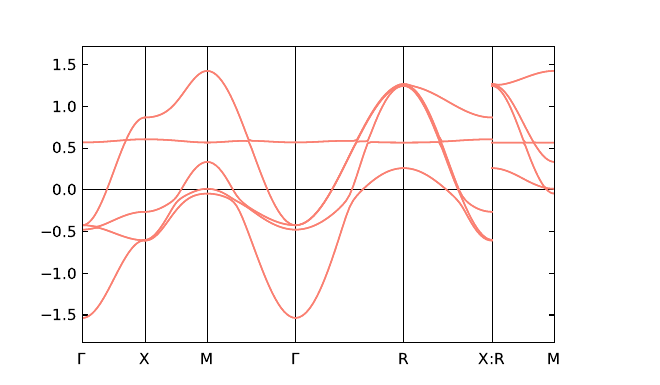
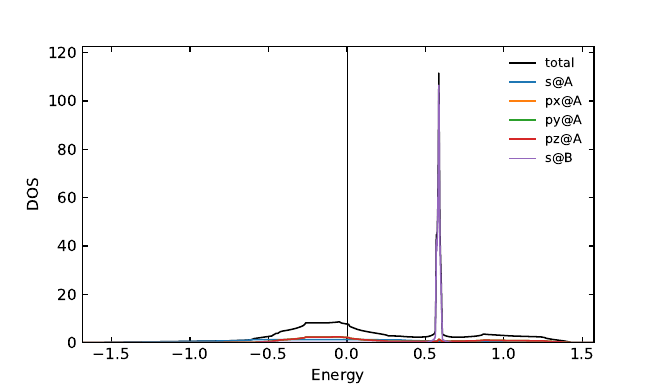
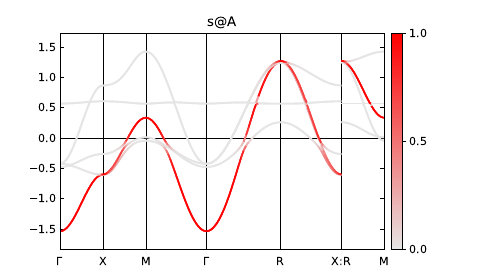
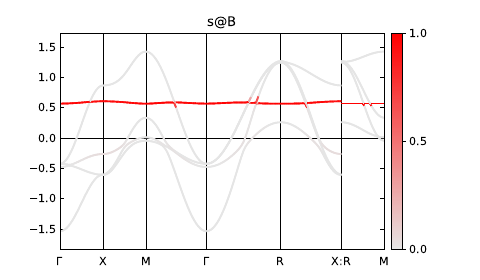

後処理ツール#
英語版はこちらです。
強束縛模型を（SAMB から、または Wannier90 の seedname_hr.dat から）作ったあと、mp_analyze はその固有値と固有ベクトルから物理量を計算します。
このページでは、制御ファイルの output で設定するツールを説明します。
ツール |
|
出力ファイル（ |
|---|---|---|
|
|
|
|
（すべての出力に使う） |
|
|
|
|
|
|
|
|
（コールバックが書き出す） |
|
|
|
|
|
|
いずれもデフォルトでは無効で、バンド分散（_dispersion.txt, .pdf, .eps, plot_band.gnu）はこれまでどおり計算されます。
例：グラフェン#
ファイルは docs/src/examples にあります。模型の入力 graphene_in.py（はじめにを参照）、制御ファイル graphene_post_ctrl.py、コールバック graphene_callback.py です。
# graphene_post_ctrl.py
graphene_post_ctrl = {
"samb": {
"model": "graphene",
"parameter": {
"z2": 1.0,
},
},
"grid": (120, 120, 1), # k grid for DOS, Fermi energy, and callback_k_full (2D: N3 = 1).
"output": {
"dos": "auto", # partial DOS for each site cluster and orbital.
"n_electron": 1, # half filling (spinless: one state per band, two bands).
"save_k_path": True, # save Ek, Uk along k path in .npz.
"callback_k_path": "graphene_callback.py",
"callback_k_full": "graphene_callback.py",
"z_expectation": "all", # expectation value of all selected SAMBs.
"dispersion": {
"k_path": "Γ-M-K-Γ",
"k_point": {"Γ": "[0,0,0]", "K": "[1/3,1/3,0]", "M": "[1/2,0,0]"},
"weight": [["pz@C(1)"]], # fat band of pz at C(1).
"z": ["z2"], # SAMB of the nearest-neighbor bond for each band.
},
},
}
3 つのファイルを 1 つのディレクトリに置き、次を実行します。
$ mp_create graphene_in.py
$ mp_analyze -v graphene_post_ctrl.py
すると graphene/output/ には、バンド分散に加えて次のファイルができます。
graphene_dos.txt,graphene_dos.pdf,graphene_dos.eps,plot_dos.gnu：DOS。graphene_weight.txt,graphene_weight.pdf,plot_weight.gnu：pz@C(1)の軌道の重み。graphene_eigen_k_path.npz：k パスに沿った固有値と固有ベクトル。graphene_z_expectation.py：SAMB の期待値。my_band.txt,my_occupation.txt：コールバックが書き出したもの。
バンド分散のファイル graphene_dispersion.txt には z2 の列が加わります。
"n_electron": 1（2 本のバンドのハーフフィリング）ではフェルミエネルギーは 0 で、-v は fermi energy = 0.0 for n_electron = 1 (gaussian). と表示します。
状態密度#
output/dos が False でないとき、基本単位胞あたりの状態密度（DOS）を、grid で与えた k 点のグリッド上で計算します（点群の模型では Γ 点のみ）。
"auto"（またはTrue）：サイトのクラスターと軌道ごとの部分 DOS で、スピンについては和を取ります。例えばs@Aは(s,u)@A(1),(s,d)@A(1),(s,u)@A(2), … の和です。"dos_spin": Trueとすると、スピンを含む基底ではスピンを分解します。例：(s,u)@Aと(s,d)@A。[[ket name]]：ケット名のリストごとに、それらのケットの部分 DOS の和を計算します。例：[["pz@C(1)"], ["pz@C(1)", "pz@C(2)"]]。ラベルは、ケット名を+でつないだものです。ケット名は、info/model_name_hr.dat（wannier モードではinfo/model_name_info_wannier.py）にある基底の名前です。
model_name_dos.txt の列は、フェルミエネルギーから測ったエネルギー（バンド分散と同じ）、全 DOS、全 DOS の積分 N(E)、部分 DOS です。先頭のコメント行に各列の内容が書かれています。例えばグラフェンでは次のとおりです。
# DOS per primitive cell (summed over spin).
# shifted by fermi energy = 0.0
# number of k points = 14400 (grid = [120, 120, 1])
# Gaussian width = 0.02449489742783178
# column 1: E
# column 2: total
# column 3: N(E), integrated total DOS
# column 4: pz@C = pz@C(1) + pz@C(2)
DOS は、全 DOS の積分がバンドの数になるように規格化しています。エネルギーの範囲はすべての固有値を含み、点の数は dos_e_num（デフォルトは 1000）です。
計算方法は dos_method で選びます。
"gaussian"（デフォルト）：デルタ関数を、標準偏差dos_widthのガウス関数で広げます（Noneならバンド幅の 1% で、エネルギーの刻み幅より小さくはしません）。刻み幅より小さい幅を与えるとエラーになります。その場合はdos_e_numを増やしてください（dos_e_numは 12 以上でなければなりません）。"tetrahedron"：libtetrabz による最適化四面体法です。libtetrabz は別途インストールします（インストールを参照）。N(E) を四面体法で計算し、DOS はエネルギーの各刻みでのその差分 \((N(E+dE/2)-N(E-dE/2))/dE\) とします。これにより、平坦なバンドでも規格化が保たれます。広がりのない鋭い DOS が得られますが（dos_widthは使いません）、点群の模型には使えません。計算時間は（k 点の数）×（バンドの数）×dos_e_numに比例し、"gaussian"よりかなり遅くなります（グラフェン、240 × 240 × 1 の格子、"dos_e_num": 1000で 34 秒、"gaussian"では 1.6 秒）。N(E) は少数のエネルギーずつ計算するので、メモリは少なく抑えられます（この例で 1 GB 未満）。大きな模型では、gridとdos_e_numをほどほどの値にしてください。
"gaussian"（左）と "tetrahedron"（右）によるグラフェンの DOS です。四面体法では、van Hove 特異点とバンド端が鋭く分解されます。




フェルミエネルギー#
フェルミエネルギーは、samb モードでは 0、wannier モードと symcw モードでは seedname.win のものです。output/n_electron を与えると、基本単位胞あたり n_electron 個の状態が占有されるように、全 k グリッド上の固有値からフェルミエネルギーを決めます。このフェルミエネルギーは、すべての出力（バンド分散、DOS、軌道の重み、保存する固有値と固有ベクトル、コールバックに渡す値）に使います。
各バンドには 1 つの状態が入るので、n_electron は、スピンを含む模型では電子数、スピンを含まない模型ではその半分です。例えば、ハーフフィリングのグラフェンでは "n_electron": 1 です。
"dos_method": "gaussian" では、状態をエネルギーの低い順に占有させ（T = 0）、占有された最高の状態と非占有の最低の状態の中間にフェルミエネルギーを置きます。"tetrahedron" では、libtetrabz で計算します。絶縁体（ギャップがあり n_electron が整数）では、どちらの方法でもフェルミエネルギーはギャップの中央になります。
output/dispersion/power に正の数 \(p\) を与えると、エネルギーをそのべき \(E_k^p\) にします。例えば、ボソン励起では \(\omega_k = E_k^{1/2}\) です。フェルミエネルギーは 0 になり、output/n_electron とは併用できません（wannier モードでも、seedname.win のフェルミエネルギーは使いません）。バンド分散と軌道の重みは \(E_k^p\) として書き出し、プロットします。DOS は \(E_k^p\) のもので、"gaussian" と "tetrahedron" のどちらでも、\(\delta(E - E_k)\) の代わりに \(\delta(E - E_k^p)\) を使います。\(E_k^p\) が実数にならないところ、つまり \(E_k\) が負で \(p\) が整数でないところでは、負のエネルギーが負のままになるように \(-|E_k|^p\) を使います。\(p\) が整数なら \(E_k^p\) をそのまま使います。例えば \(p\) が偶数なら正になります。.npz ファイルの固有値とコールバックに渡す固有値は、べきにしません。
軌道の重み（ファットバンド）#
output/dispersion/weight を output/dos と同じように（"auto" または [[ket name]] で）与えると、各固有ベクトルでのケットの重み、つまりケット \(m\) についての \(|U_k[m,n]|^2\) の和を、k パスに沿って計算します。
model_name_weight.txt の列は、k、フェルミエネルギーから測ったエネルギー（バンド分散と同じ）、重みです。_weight.pdf と plot_weight.gnu では、重みごとに 1 ページずつ、バンドを重みの色でプロットします。
"auto" では常にスピンについて和を取ります（dos_spin は使いません）。スピンを分解した重みには [[ket name]] を与えてください。例：[["(pz,u)@C(1)", "(pz,u)@C(2)"]]。
グラフェンでは、2 つの副格子の間の対称性により、pz@C(1) の重みはどのバンドでも 1/2 です。


複数の軌道を持つ例#
複数の軌道を持つ模型では、部分 DOS と軌道の重みからバンドの性格がわかります。次の例は、A に s 軌道と p 軌道、B に s 軌道を持つスピンを含む模型（CsCl 型、空間群 221、恒等既約表現の SAMB に任意のパラメータを与えたもの）で、"dos": "auto", "dos_method": "tetrahedron", "n_electron": 4, "weight": "auto" で計算しました。
バンド分散と DOS（鋭いピークは B の s の狭いバンド）：




s@A と s@B の軌道の重み（_weight.pdf の 5 ページのうち 2 ページ）：




固有値と固有ベクトル#
"save_k_path": True と "save_k_full": True の一方または両方を指定すると、k パスに沿った固有値と固有ベクトル、全 k グリッド上の固有値と固有ベクトルを、それぞれ model_name_eigen_k_path.npz と model_name_eigen_k_full.npz に保存します。中身は次のとおりです。
Ek[k, n],Uk[k, :, n],k_grid,ket,fermi_energy：後述のコールバックの説明のとおり。k_linear（k パスに沿った場合）またはgrid（全 k グリッドの場合）。
これらは numpy.load で読めます。例えば、Jupyter で固有ベクトルを解析するには次のようにします。
import numpy as np
z = np.load("graphene/output/graphene_eigen_k_path.npz")
Ek, Uk, ket = z["Ek"], z["Uk"], list(z["ket"])
weight = np.abs(Uk[:, ket.index("pz@C(1)"), :]) ** 2 # weight[k, n] of pz@C(1).
コールバックと同様に、save_k_path にはバンド分散が必要です（output/dispersion/k_path が None でなく、模型が空間群のものであること）。また、save_k_full では全グリッド上のすべての固有ベクトルをメモリに保持します。
独自の計算のためのコールバック#
MultiPie が提供しない量は、H(k) の固有値と固有ベクトルを受け取るユーザー定義の関数で計算できます。
output/callback_k_path と output/callback_k_full の一方または両方に、トップディレクトリ（制御ファイルがある場所）からの相対パスで Python ファイルを与え、そのファイルで同じ名前の関数を定義します。1 つのファイルで両方を定義でき、ファイルは 1 回だけ読み込まれます。
例の graphene_callback.py は、k パスに沿ったバンドのエネルギーと、\(T = 0\) での各ケットの占有数 \(n_m = (1/N_k) \sum_{k,n} \theta(E_F - E_{kn}) |U_k[m,n]|^2\) を書き出します。
"""
Example of callbacks for graphene_post_ctrl.py.
The functions receive the eigenvalues Ek[k,n], the eigenvectors Uk[k,:,n], and the info dict,
and write their results in the output directory of the model.
"""
import os
import numpy as np
# ==================================================
def output_dir(info):
# "output" is the default of output/dir; change it if output/dir is changed.
return os.path.join(info["_topdir"], info["name"], "output")
# ==================================================
def callback_k_path(Ek, Uk, info):
"""
Band energies measured from the Fermi energy along the k path, with the position along the path.
"""
data = np.column_stack([info["k_linear"], Ek - info["fermi_energy"]])
header = "k " + " ".join(f"E{n + 1}" for n in range(Ek.shape[1]))
np.savetxt(os.path.join(output_dir(info), "my_band.txt"), data, header=header)
# ==================================================
def callback_k_full(Ek, Uk, info):
"""
Occupation of each ket at T = 0, n_m = (1/Nk) sum_{k,n} theta(E_F - E_kn) |U_k[m,n]|^2.
"""
occupied = Ek < info["fermi_energy"]
n_m = np.einsum("kn,kmn->m", occupied, np.abs(Uk) ** 2) / len(Ek)
with open(os.path.join(output_dir(info), "my_occupation.txt"), "w", encoding="utf-8") as f:
for ket, n in zip(info["ket"], n_m):
print(f"{ket} {n:.6f}", file=f)
ハーフフィリングのグラフェンでは、my_occupation.txt は次のようになります。
pz@C(1) 0.500000
pz@C(2) 0.500000
コールバックの引数は次のとおりです。
Ek[k, n]：昇順の固有値（フェルミエネルギーでずらさず、output/dispersion/powerのべきにもしません）。Uk[k, :, n]：Ek[k, n]の固有ベクトル。つまり各 k についてH(k) = Uk @ diag(Ek) @ Uk^†で、info["ket"]の順、output/fourier/tb_gaugeで与えたゲージです。info（dict）：k_path（str）、k_point（dict、ラベルから分数座標へ）：バンド分散の k パスと k 点（バンド分散を計算しない場合はNone）。k_grid（ndarray）：EkとUkの k 点（基本単位胞での分数座標）、[number of k, 3]。ket（list）：ケット名。fermi_energy（float）、name（str）：フェルミエネルギーと模型の名前（模型のない wannier モードでは seedname）。_topdir（str）、_verbose（bool）：トップディレクトリ（絶対パス）と verbose オプション。callback_k_pathのみ：k_linear（ndarray）とk_dis_pos（dict）。バンド分散のプロットに使う、k パスに沿った位置とラベルの位置です。callback_k_fullのみ：grid（list）。[N1, N2, N3]です。callback_k_fullのみ：output/callback_infoで指定した量（後述）。
これらの関数は、ほかの出力のあと、解析の最後に呼ばれます。callback_k_path にはバンド分散が必要です。callback_k_full では、全グリッド上のすべての固有ベクトル、つまり N1 x N2 x N3 x (number of kets)^2 個の複素数をメモリに保持するので、大きな模型では粗い grid が必要になることがあります。
output/callback_info を設定すると、全 k グリッド上の各固有状態での局所演算子の期待値を、info[keyword]（[k, n]）として渡します。キーワードは output/dispersion/local と同じで、スピン Sx, Sy, Sz、軌道角運動量 Lx, Ly, Lz、四極子 Qu, Qv, Qyz, Qxz, Qxy（定義は局所演算子を参照）と、z2 などの SAMB の名前（SAMB とその期待値を参照）です。例えば
"output": {
"callback_k_full": "my_callback.py",
"callback_info": ["Sx", "Sy", "Sz"],
},
とすると、callback_k_full(Ek, Uk, info) で info["Sx"]、info["Sy"]、info["Sz"] が得られます。output/callback_info には output/callback_k_full が必要です。局所演算子には lg または lgs 基底の模型が必要で、スピンの演算子にはスピンを含む模型が必要です。
Note
縮退したバンドの中では、固有ベクトル、したがって各バンドの値は任意です。例えば、空間反転対称性と時間反転対称性の両方を持つスピンを含む模型では、バンドはすべての k で 2 重に縮退しています。意味があるのは、縮退したバンドについての和だけです。output/dispersion/local と output/dispersion/z についても同様です。
演算子は模型の軸に沿って定義されます。Wannier の入力では、seedname.nnkp の射影の軸（z 軸、x 軸、スピンの量子化軸）は考慮しません。
Note
入力ファイルと違って、コールバックのファイルは Python のコードとして実行されます。信頼できるコールバックのファイルだけを使ってください。
局所演算子#
output/dispersion/local と output/callback_info の局所演算子は、模型の原子基底、つまり方域調和関数の軌道 s, px, py, pz, dv, dxy, dxz, dyz, du, fc, fs, fbz, f3, fx, fy, faz（スピンを含む模型ではスピン u, d 付き）での行列 \(O_{mm'}\) です。\(k\) での固有状態 \(n\) の値は、期待値 \(\langle O \rangle_{kn} = \sum_{mm'} U_k[m,n]^* \, O_{mm'} \, U_k[m',n]\) です。
スピン
Sx,Sy,Sz：\(\boldsymbol{S} = \boldsymbol{\sigma}/2\)（\(\hbar\) 単位）。\(\boldsymbol{\sigma}\) は (u,d) の順のパウリ行列です。軌道角運動量
Lx,Ly,Lz：ランク \(l\) の軌道に対する通常の角運動量演算子（\(\hbar\) 単位）で、\([L_x, L_y] = iL_z\) と \(\boldsymbol{L}^2 = l(l+1)\) を満たします。四極子
Qu,Qv,Qyz,Qxz,Qxy：角度関数の行列要素 \(\langle l m | Q(\hat{\boldsymbol{r}}) | l m' \rangle\) です。キーワード
\(Q(\hat{\boldsymbol{r}})\)
Qu\((3z^2 - r^2)/(2r^2)\)
Qv\(\sqrt{3}(x^2 - y^2)/(2r^2)\)
Qyz\(\sqrt{3}\,yz/r^2\)
Qxz\(\sqrt{3}\,zx/r^2\)
Qxy\(\sqrt{3}\,xy/r^2\)
例えば、\(\langle p_z | Q_u | p_z \rangle = 2/5\)、\(\langle d_u | Q_u | d_u \rangle = 2/7\)、\(\langle f_{az} | Q_u | f_{az} \rangle = 4/15\) です。
演算子は、各サイト（原子と副格子）の各軌道ランク \(l\) の中で作用します。異なるサイトの間や、p と d のような異なるランクの間の行列要素は 0 です。\(\boldsymbol{L}\) と \(Q\) はスピンについて対角で、\(\boldsymbol{S}\) は軌道について対角です。s 軌道（\(l = 0\)）では、\(\boldsymbol{L}\) と \(Q\) は 0 です。局所演算子は lg または lgs 基底の模型で使え、jml 基底では使えません。
SAMB とその期待値#
模型の SAMB \(Z_j\)、つまり \(H = \sum_j z_j Z_j\) を与える行列も、演算子として使えます。\(Z_j\) はエルミートで正規直交、\(\mathrm{Tr}[Z_i Z_j] = \delta_{ij}\) です。トレースは基本単位胞のケットと、\(Z_j(R)\) の格子ベクトル \(R\) についてとります。
output/dispersion/z：SAMB の名前のリスト。例えば["z2"]。k パスに沿った k での固有状態 \(n\) の値 \(\langle Z_j \rangle_{kn} = \langle u_{kn} | Z_j(k) | u_{kn} \rangle\) を、バンド分散のファイルのoutput/dispersion/localの列のあとに加えます。\(Z_j(k)\) は、\(Z_j(R)\) を \(H(k)\) と同じゲージで Fourier 変換したものです。バンド分散のプロットのカラーマップには、これらの列の最初のものを使います。output/callback_info：全 k グリッド上の同じ値を、info["z2"]（[k, n]）としてcallback_k_fullに渡します。output/z_expectation：SAMB の名前のリスト、または選んだ SAMB すべてを表す"all"。基本単位胞あたりの期待値\[ \langle Z_j \rangle = \frac{1}{N_k} \sum_{k n} f(E_{kn} - E_{\rm F}) \langle Z_j \rangle_{kn} = \mathrm{Tr}[\rho Z_j] \]を、
gridで与えた k グリッド上（点群の模型では Γ 点のみ）で、\(T = 0\) で計算します。フェルミエネルギー \(E_{\rm F}\) より下では \(f = 1\)、上では \(f = 0\) です。\(E_{\rm F}\) 上（\(10^{-8}\) 以内）の状態は、電子数がoutput/n_electronになるように、残りの電子を等分します（n_electronを与えない場合は \(f = 1/2\)）。SAMB の格子ベクトル \(R\) についての密度行列 \(\rho(R)\) を通して計算するので、全グリッド上の \(Z_j(k)\) は必要ありません。
SAMB の名前は samb/select で選ばれている必要があります。名前は模型のすべての SAMB の名前、例えば z1, z2, z38, … です。SAMB は samb モードと symcw モード、および samb/model を与えた wannier モードで使えます。
model_name_z_expectation.py には、フェルミエネルギー、n_electron、k グリッド、バンドエネルギー \(E_{\rm band} = (1/N_k) \sum_{kn} f E_{kn}\)、\(H\) のパラメータについての z_sum \(= \sum_j z_j \langle Z_j \rangle\)（パラメータがすべて z_expectation に含まれない場合は None）、期待値が入ります。\(H = \sum_j z_j Z_j\) なので、z_sum はバンドエネルギーに一致します。例えば上のグラフェンの例では \(H = Z_2\)（"z2": 1.0）なので、バンド分散のファイルでは \(\langle Z_2 \rangle_{kn} = E_{kn}\) で、
"band_energy": -0.6428260081562857,
"z_sum": -0.642826008156286,
"expectation": {
"z1": 0.7071067811865476,
"z2": -0.642826008156286,
"z3": -3.572162951026015e-17,
...
となります。\(Z_1\) は単位行列を（2 つのサイトについて規格化するため）\(\sqrt{2}\) で割ったものなので、電子 1 個では \(\langle Z_1 \rangle = 1/\sqrt{2}\) です。ほかの SAMB は対称性により（数値誤差を除いて）0 です。
gnuplot によるプロット#
PDF と EPS のプロットは matplotlib で書き出します。gnuplot スクリプトも同じプロットを書き出し、プロットの調整に便利です。
$ cd graphene/output
$ gnuplot plot_dos.gnu # graphene_dos.pdf and .eps
$ gnuplot plot_weight.gnu # graphene_weight.pdf (one page for each weight)
PDF と EPS のファイルは上書きされます。プロットの範囲とフェルミ準位は、スクリプトの先頭で変数として与えています。例えば plot_dos.gnu では次のとおりです。
Ef = 0.0 # fermi energy (data are already shifted by Ef).
Ef_line = 0.0 # position of fermi level in plot.
xmin = -1.347219358530748
xmax = 1.347219358530748
ymin = 0.0
ymax = 1.9823887755144438
また、plot_weight.gnu には、プロットする重みのリスト labels があります。